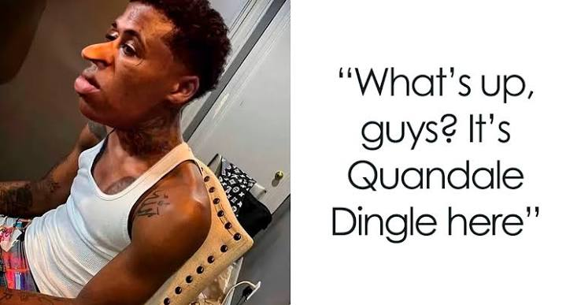

Wie is Quandale?
Quandale Dingle begon als een grappige naam die online werd gevonden.
Daarna werd hij een meme met rare verhalen, edits en video's.

Een van de meest mysterieuze meme-legendes van het internet.
Quandale Dingle begon als een grappige naam die online werd gevonden.
Daarna werd hij een meme met rare verhalen, edits en video's.
